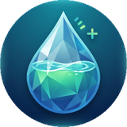
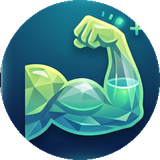

HydroPro Tracker
Water, protein, calories, and sleep — the four primary numbers that are the most impactful markers of our day-to-day health. Now easily tracked in one simple tool: the HydroPro Tracker.
Open the TrackerThe Four Pillars
Everything that actually moves the needle, day to day.

Water
Drives energy, focus, and nearly every system in your body.

Protein
Fuels muscle repair and keeps you satisfied longer.
Calories
The foundation of every energy and weight goal you set.
Sleep
The single biggest lever for how you'll feel tomorrow.
Why These Four?
Because they're the numbers that actually move the needle. Hydration, protein, and calories shape how your body performs today — sleep determines how well it recovers for tomorrow. Track these four consistently, and most other health goals start taking care of themselves.
How It Works
Three steps. No spreadsheets, no overthinking.
Log it
One tap for water, protein, calories, or sleep.
Watch it fill
A ring around each icon shows exactly where you stand against today's goal.
Stay consistent
Reminders keep you on track — day after day, without the mental math.
Good to Know
Is it free?
Yes — it's currently free while we grow through real testing and feedback.
Is my data private?
Your data lives on your own device. Nothing is shared, sold, or visible to anyone else.
What phones does it work on?
Any modern iPhone or Android phone — add it to your home screen and it opens just like an app.
Found a bug, or have an idea?
Email anytime — this is actively shaped by what real users actually run into.
See Where You Stand Today
Set up takes under a minute.
Open the Tracker